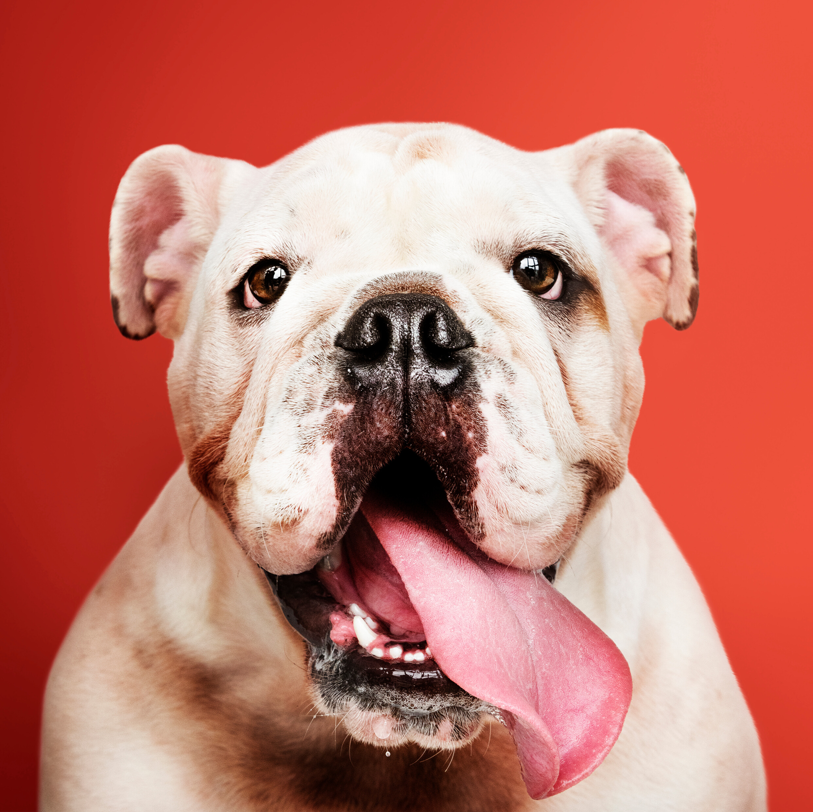

Karina
“A Maristela é sempre muito atenciosa e carinhosa com meu cachorrinho Rocky. Ele vai fazer 10
anos e se trata desde filhote com ela. Realizo as vacinas e consultas regulares no
consultório e
já fizemos castração e limpeza nos dentinhos também. Recomendo consultório!”
Francisco João Lima
“A doutora é ótima, sempre atendeu muito bem o Luizito, os produtos da conveniência também
são de
muita qualidade e de preço justo.”
Leonardo Chagas
“Experiência positiva! Veterinária foi assertiva e muito atenciosa durante e após a consulta,
inclusive ligando para saber como evoluiu a minha cachorrinha.”
Rosane Zimmermann
“Os atendentes são muito simpáticos e educados, e a Dra. É simplesmente um anjo. além de uma
ótima
profissional, Tem um carinho e uma paciência não só com o anima, mas com a gente. o que
infelizmente
é raro.”

Carla Regina Armiliato
“A Dra Maristela sempre foi muito atenciosa e carinhosa com nosso pet. Está sempre atualizada
com
os procedimentos na sua área. Somos muito gratos pela dedicação com que tratou o Spark.”
Rosane Rosa
“Dra. Maristela é uma excelente profissional, atenciosa e cuidadosa com nosso pet. Lugar
muito
limpo, aconchegante e preço justo.”